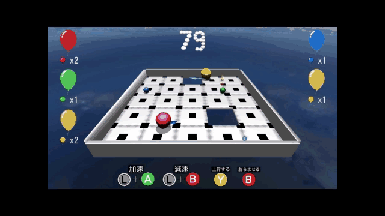

自身の空気を使った移動で体当たりをし、 敵を場外にさせたり、ギミックに陥れたりする２～８人の対戦ゲームです。
**紹介動画**
・DirectionLight.cpp ・DirectionLight.h ・LightManager.cpp ・LightManager.h ・PointLight.cpp ・PointLight.h ・SpotLight.cpp ・SpotLight.h ・BackGround.cpp リスポーン地点を割り出すコード以外 ・BackGround.h ・BalloonAir.cpp 音と、傾きのコード以外 ・GameScene.cpp ・GameScene.h ・GaussianBlur.cpp ・GaussianBlur.h ・main.cpp ・MenuScene.cpp ・MenuScene.h ・Meteor.cpp ・Meteor.h ・MoveRiver.cpp ・MoveRiver.h ・Player.cpp ・Player.h ・ResultScene.cpp 状態遷移部分 ・SelectScene.cpp ・SelectScene.h ・Sky.cpp ・Sky.h ・Thunder.cpp ・Thunder.h ・Tile.cpp ・Tile.h ・TileStage.cpp ・TileStage.h ・TitleBack.cpp ・TitleBack.h ・TitleScene.cpp ・Title.h ・WindTurbine.cpp ・WindTurbine.h ・model.fx ・postEffect.fx ・shadow.fx ・shadowReceiver.fx ・Sky.fx ・SkyBoard.fx
複雑なステージにも対応できるように、 壁にあたった際にステージの法線とプレイヤーの移動方向から、 反射する角度を計算するようにしました。
あたった壁の法線の外積と、プレイヤーの方向ベクトルのなす角Nを求める。
なす角Nを2倍した分を、回転させ、プレイヤーの方向ベクトルとする。
影を追加することにより、風船が空中にいるときでも、
どこにいるか分かりやすくしました。
また、光源からオブジェクトまでの深度値を測り、
オブジェクトより手前にある障害物に影が落ちないように
投影シャドウから、デプスシャドウに改良しました。
タイトルロゴ、シームレス背景、セレクト画面のUIを今回始めて自分で制作しました。 主にiPadのProcreateを使いました。

ステージ選択画面
数字・操作方法
シームレスな背景
最大８人でのプレイを想定し、ちょうどいい大きさと、ステージごとに違うギミックを実装しました。
## ステージギミック：風車
風車が一定間隔で動き、風車が向いている向きにプレイヤーが居ると風の影響を受けてとばされます。
２つの軸(ブレードと支柱)が回転するので、回転の計算に苦戦しました。

## ステージギミック：針 一定間隔で針が床から突き出てきます。

## ステージギミック：隕石 一定間隔で床を破壊する隕石が空から降ってきます。
## ステージギミック：雷 一定間隔で雷が落ち、近くにいたプレイヤーは即死します。
空島ステージで配置してある川はテクスチャを移動させて、流れているように見せています。